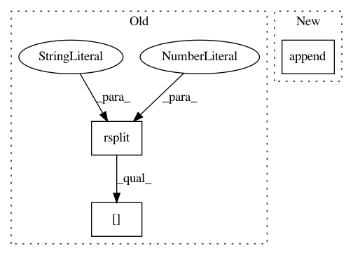

6197bc8b6617d51576e81e23c632cfd40535f2e6,pynets/utils.py,,compile_iterfields,#Any#Any#Any#Any#Any#Any#Any#Any#Any#Any#Any#Any#Any#Any#Any#Any#Any#Any#Any#Any#Any#Any#Any#Any#Any#Any#Any#Any#,577
Before Change
if num_node_sizes > 1:
node_size = []
for path in est_path_list:
node_size.append(path.split(".npy")[0].rsplit("_",1)[-1])
else:
node_size = [node_size] * len(est_path_list)
After Change
if multi_thr is True:
thr_lst = []
for path in est_path_list:
thr_lst.append(str(thr))
thr = thr_lst
else:
thr = iter_thresh
In pattern: SUPERPATTERN
Frequency: 3
Non-data size: 3
Instances
Project Name: dPys/PyNets
Commit Name: 6197bc8b6617d51576e81e23c632cfd40535f2e6
Time: 2018-05-22
Author: dpisner@utexas.edu
File Name: pynets/utils.py
Class Name:
Method Name: compile_iterfields
Project Name: apache/incubator-tvm
Commit Name: 6770d28a844597e064b2e0902a36207ff877857d
Time: 2020-09-03
Author: kevinthesunwy@gmail.com
File Name: python/tvm/relay/frontend/tensorflow.py
Class Name: GraphProto
Method Name: _get_relay_func
Project Name: vatlab/SoS
Commit Name: 3239b81335c6a63e209ee9419f4efeea167e40bc
Time: 2019-08-05
Author: ben.bog@gmail.com
File Name: src/sos/workers.py
Class Name: WorkerManager
Method Name: __init__